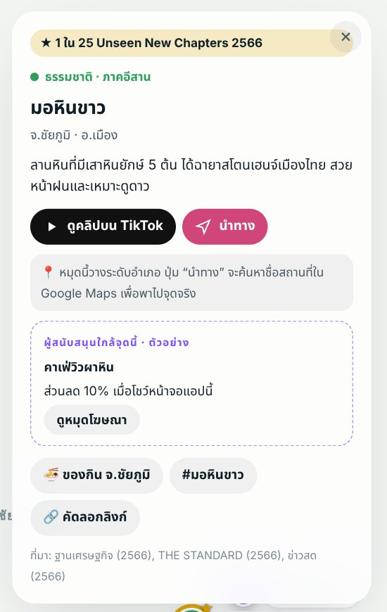
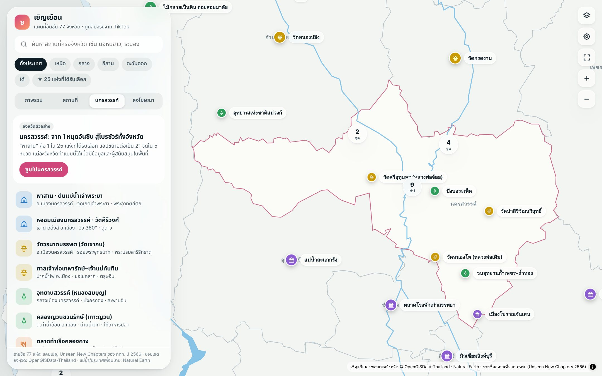
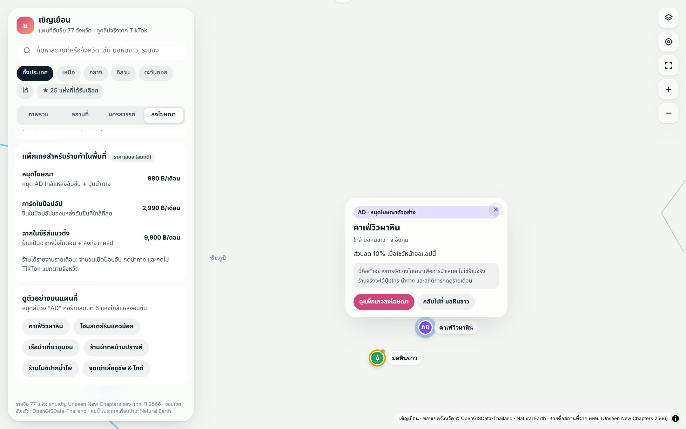
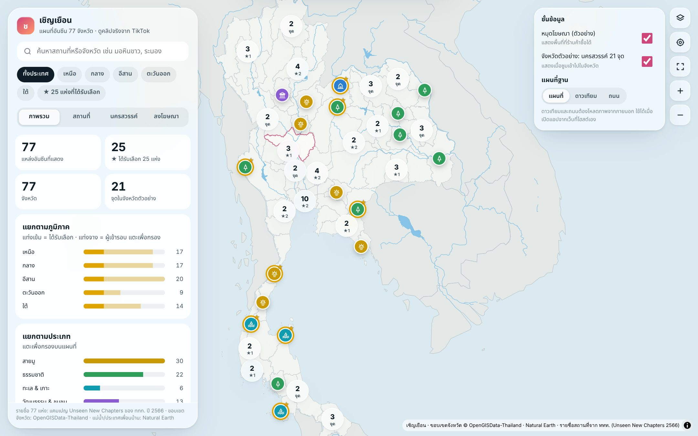
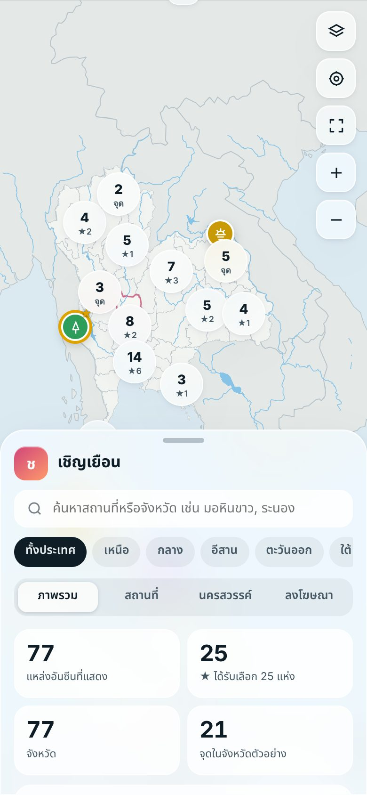
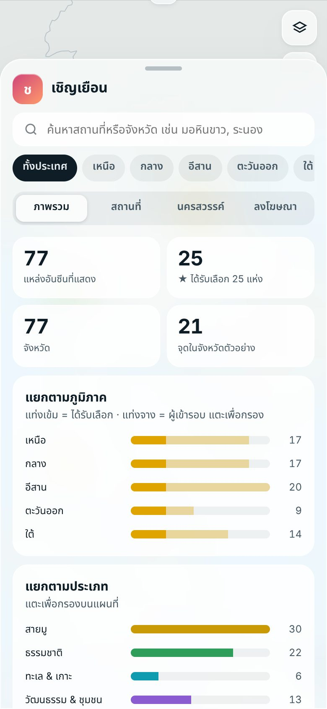
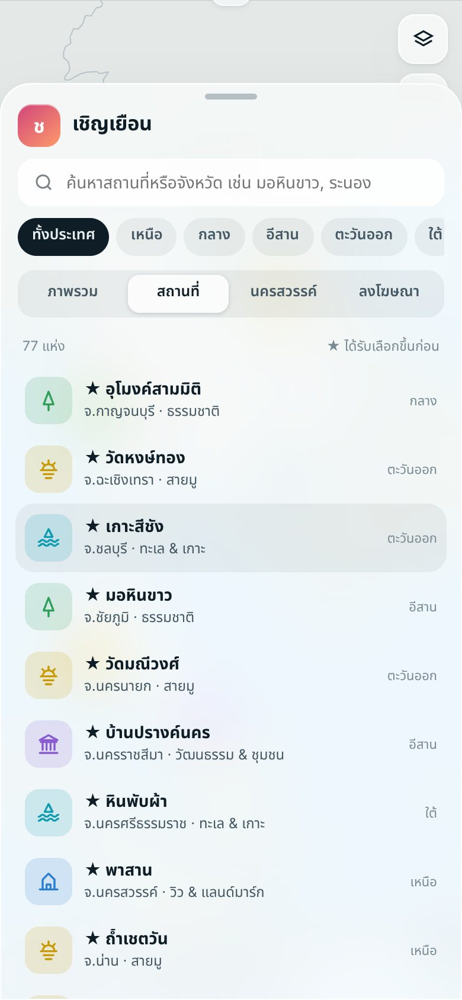

✨ เชิญเยือนคือโบรชัวร์บนจอมือถือ รวม 77 แหล่งท่องเที่ยวอันซีน จังหวัดละ 1 แห่ง จากแคมเปญ Unseen New Chapters ของ ททท. ปี 2566 แตะหมุดเดียวก็ดูคลิปจริง นำทาง และเจอร้านในชุมชนใกล้จุดนั้น
ป้ายบิลบอร์ดอยู่ได้จุดเดียวและแพง ส่วนเชิญเยือนอยู่ในมือนักท่องเที่ยวทุกคนที่กดลิงก์จาก TikTok โฆษณาของร้านในชุมชนจึงขึ้นตรงหน้าสถานที่ที่เขากำลังสนใจ และนับยอดกดได้ทุกครั้ง
บาท/เดือน/ป้าย (ตัวอย่างเรทในกรุงเทพฯ) อยู่ได้จุดเดียว วัดผลยาก
ต่อหมุดโฆษณา (ราคาเสนอ สมมติ) ขึ้นตรงจุด รู้ยอดเปิด กดนำทาง และกดไป TikTok
ที่มา: เรทบิลบอร์ดจาก Thumbsup (2562) · โฆษณา TikTok ในไทย CPM US$0.90–2.60 จาก Stackmatix (2026)
เปิดลิงก์เว็บ หรือดับเบิลคลิกไฟล์ chern-yuean-index.html แผนที่ประเทศไทยพร้อมหมุด 77 แห่งจะขึ้นทันที
กดชิปภาค เช่น อีสาน หรือ ⭐ 25 แห่ง พิมพ์ค้นหาชื่อจังหวัด หรือแตะแท่งกราฟประเภท เช่น สายมู
ป๊อปอัปจะบอกว่าที่นี่คืออะไร กด ▶ ดูคลิปบน TikTok เพื่อดูบรรยากาศจริง แล้วกด 🧭 นำทาง เพื่อไปเลย
หน้าจอแบ่งเป็นแผงควบคุมกระจกใสด้านซ้าย แผนที่ตรงกลาง และปุ่มควบคุมด้านขวาบน ตัวเลขบนภาพตรงกับคำอธิบายด้านล่าง
ดูสีก็รู้ประเภทก่อนแตะ หมุดที่มีวงทองและดาวคือแหล่งที่ได้รับเลือก
แตะหมุดแล้วป๊อปอัปกระจกใสจะเด้งขึ้นเหนือหมุด ทุกปุ่มเปิดในแท็บใหม่

ตัวเลขสรุป 4 ช่อง กราฟแท่งตามภาค (แท่งเข้ม = ได้รับเลือก แท่งจาง = ผู้เข้ารอบ) ตามประเภท และความแม่นยำของหมุด แตะกราฟเพื่อกรอง และมีปุ่มดูคลิป Unseen บน TikTok
รายชื่อแหล่งอันซีน ⭐ ขึ้นก่อน แตะชื่อแล้วแผนที่บินไปที่หมุด ถ้ากดตำแหน่งของฉันไว้ จะเรียงจากใกล้ไปไกลพร้อมระยะทาง
จังหวัดตัวอย่าง 21 จุดใน 5 หมวด เช่น พาสาน หอชมเมือง บึงบอระเพ็ด ตลาดชุมแสง กด “ซูมไปนครสวรรค์” เพื่อดูโบรชัวร์ระดับจังหวัด
เทียบบิลบอร์ดกับ TikTok แพ็กเกจราคาเสนอ 3 แบบ (หมุด AD 990 · การ์ดในป๊อปอัป 2,990 · ฉากในซีรีส์ 9,900 บาท) และร้านตัวอย่าง 6 ร้าน


กดปุ่มรูปแผ่นซ้อน (บนสุดของแถวขวา) เพื่อเปิดแผงชั้นข้อมูล

เปิดไว้เป็นค่าเริ่มต้น หมุด AD จะขึ้นเมื่อซูมเข้าใกล้พอ
เปิดไว้ ซูมเข้านครสวรรค์แล้วจะเห็นหมุดเล็กอีก 21 จุด
แอปพยายามเปิด ดาวเทียม ให้เองตอนเริ่ม ถ้าโหลดไม่ได้จะใช้แผนที่ในตัวแอป ดาวเทียมใช้ Sentinel-2 cloudless (สำรองด้วย Esri) ส่วนถนนใช้ CARTO/OpenStreetMap
บนมือถือ แผนที่อยู่ครึ่งบน แผงควบคุมกลายเป็นแผ่นเลื่อนจากด้านล่าง

🗺️ หน้าแรก
📊 ภาพรวม (ขยายเต็ม)
📍 รายชื่อสถานที่แตะเพื่อสลับขนาดแผง เต็มจอ → ย่อ → ปกติ
แผงย่อลงเองให้เห็นป๊อปอัป แตะที่ว่างบนแผนที่เพื่อคืนขนาด
แผงขยายเต็มจอให้พิมพ์และเลือกผลได้ง่าย
| วิธีเปิด | ทำอย่างไร | 🛰️ ดาวเทียม / ถนน | 📍 ตำแหน่งของฉัน | 👥 ใครเปิดได้ |
|---|---|---|---|---|
| ☁️ เว็บ Netlify | เปลี่ยนชื่อไฟล์เป็น index.html ลากไปวางที่ app.netlify.com/drop แล้วกด Claim this site ภายใน 1 ชั่วโมง | ได้ | ได้ | ทุกคนที่มีลิงก์ |
| 💻 ไฟล์ในเครื่อง | ดับเบิลคลิก chern-yuean-index.html (ต้องต่อเน็ต) | น่าจะได้ ยังไม่ได้ทดสอบ | ขึ้นกับเบราว์เซอร์ | คนที่ได้ไฟล์ |
| 🤖 ลิงก์ claude.ai | เปิดลิงก์แอปใน Claude | ไม่ได้ | ไม่ได้ | เฉพาะคนที่กด Share ให้ |
มี 3 จาก 77 หมุดที่วางตรงจุดจริง ที่เหลือเป็นจุดกลางอำเภอหรือจังหวัด ดูภาพรวมได้ แต่เวลาเดินทางให้กด 🧭 นำทางเสมอ เพราะปุ่มนี้ค้นชื่อจริงใน Google Maps
รายชื่อ 77 แห่งครบทุกจังหวัด · คำบรรยายและอำเภอของ 25 แห่งที่ได้รับเลือก · จังหวัดตัวอย่างนครสวรรค์ 21 จุดพร้อมเวลาเปิดและค่าเข้า
อีก 52 แห่งมีแค่ชื่อและจังหวัด · ร้าน AD และราคาแพ็กเกจเป็นตัวอย่างสมมติ · ผลค้นหา TikTok อาจมีคลิปไม่ตรง · ภาพดาวเทียม Sentinel-2 ใช้ฟรีเฉพาะงานไม่แสวงกำไร (CC BY-NC-SA 4.0)
📚 ที่มา: ฐานเศรษฐกิจ (รายชื่อ 77 แห่ง) · ข่าวสด (25 แห่ง + อำเภอ) · THE STANDARD (คำบรรยาย) · KTC (นครสวรรค์) · OpenGISData-Thailand · Natural Earth · Sentinel-2 cloudless (EOX)
| 😕 อาการ | 🔍 สาเหตุ | ✅ วิธีแก้ |
|---|---|---|
| กด “ดาวเทียม” แล้วขึ้นว่าโหลดไม่ได้ | เปิดจากลิงก์ claude.ai ซึ่งไม่ให้โหลดภาพจากเว็บอื่น | เปิดจาก Netlify หรือดับเบิลคลิกไฟล์ HTML |
| ปุ่มตำแหน่งของฉันไม่ทำงาน | ยังไม่อนุญาตตำแหน่ง หรือเปิดจาก claude.ai | เปิดจาก Netlify แล้วกดอนุญาตตำแหน่ง |
| Netlify ขึ้นหน้าว่างหรือ Page not found | ลากไฟล์ zip หรือไฟล์ที่ไม่ได้ชื่อ index.html | เปลี่ยนชื่อเป็น index.html แล้วลากไฟล์เดียวใหม่ |
| เว็บ Netlify หายหรือถามรหัสผ่าน | ยังไม่ได้ Claim | กด Claim this site แล้วสมัครบัญชีฟรี |
| แผนที่ไม่ขึ้นเลย | ไม่ได้ต่อเน็ต | ต่อเน็ตแล้วรีเฟรชหน้า |
| หาหมุดที่ต้องการไม่เจอ | ถูกรวมเป็นกลุ่ม หรือตัวกรองค้างอยู่ | แตะวงกลมตัวเลข หรือกด “ทั้งประเทศ” และปิดชิป ⭐ |
| ปุ่มคัดลอกลิงก์ไม่คัดลอก | เบราว์เซอร์ไม่ให้เข้าคลิปบอร์ด | แอปจะแสดงลิงก์ในแถบแจ้งเตือน ให้คัดลอกเอง |